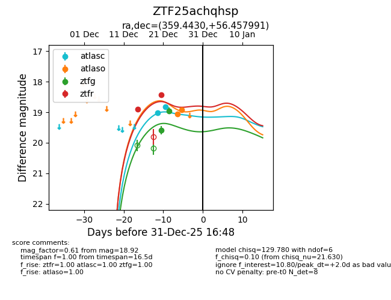
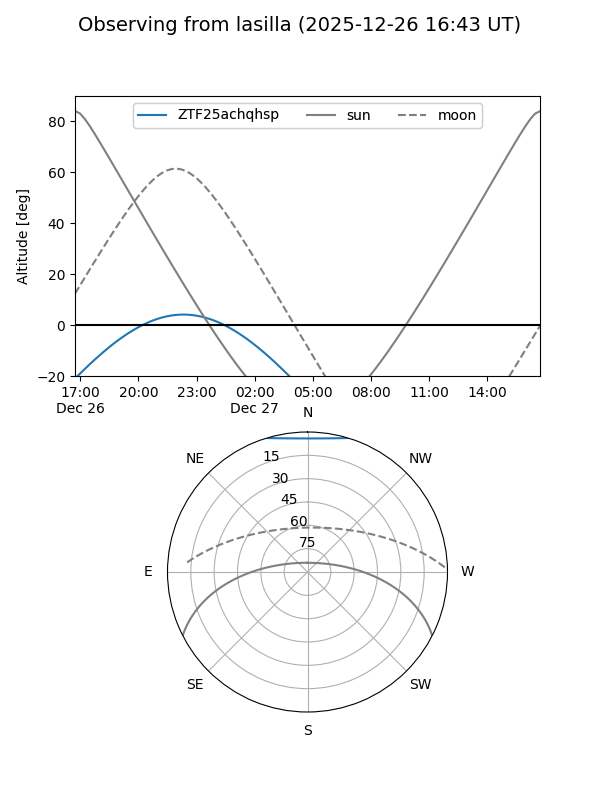
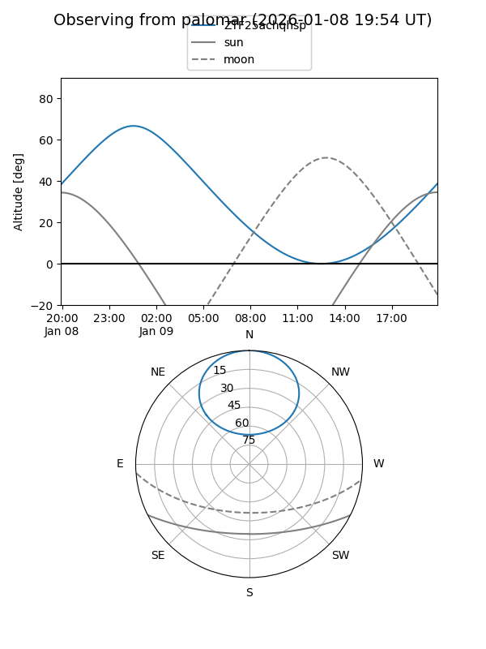
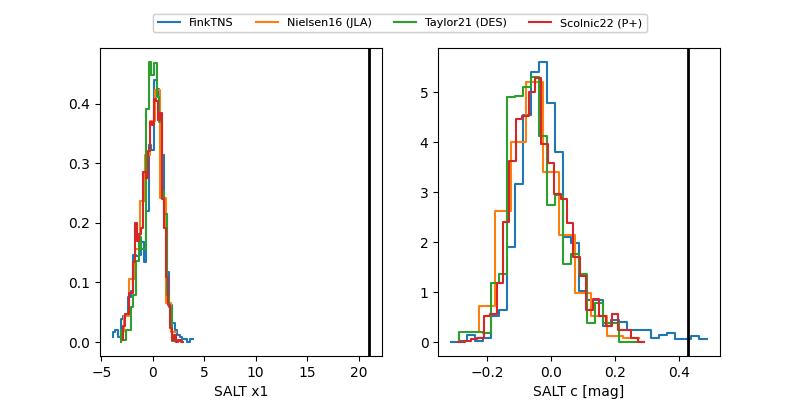

ZTF25achqhsp
Target ZTF25achqhsp at 2025-12-31 17:00
Aliases and brokers:
FINK:
Lasair:
ALeRCE:
alt names
ZTF25achqhsp (ztf,fink_ztf)
Coordinates:
equatorial (ra, dec) = 359.4430,+56.45799
equatorial (HMS+DMS) = 23:57:46.31,+56:27:28.77
galactic (l, b) = (115.5299,-5.64053)
Flags:
Photometry:
last atlasc=18.83, atlaso=18.92, ztfg=18.95, ztfr=18.44
2 atlasc, 2 atlaso, 2 ztfg, 2 ztfr detections
Lightcurve

Visibility


Additional plots
